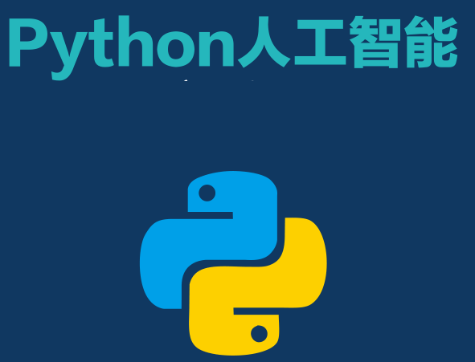
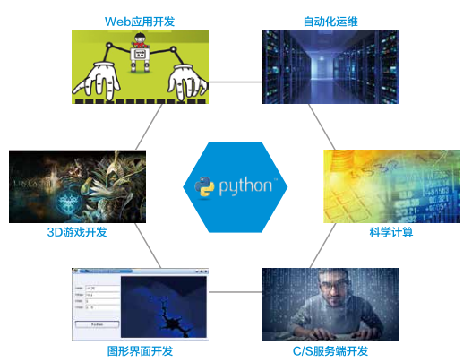

[TOC]

开始学习Python人工智能,为自己梳理一下整个知识脉络!
# Python 优势
1 简单
Python 是一种代表简单主意思想的语言,阅读一个良好的Python 程序就像是在读英语. 使你可以专注于解决问题本身,而不是去搞明白语言本身
2 易学
Python 定位是 优雅,明确,简单, 所以Python程序看起来总是简单易懂,初学者学习Python不但入门容易,而且将来深入学习也可以编写非常非常复杂的的程序
3 开发效率高
开发效率非常高,Python有强大的第三方库,基本上你想通过计算机实现的任何功能,Python 官方库里都有对应的模块进行支持,直接下载调用后,在基础库上载进行开发,大大降低了开发周期,避免重复造轮子
4 可移植性
由于它的开源本身,Python 已经被移植在需要平台(经过改动,它能够工作在任何平台上),如果你小心的避免使用依赖于系统的特性,那么你的所有python程序无需修改几乎就可以在市场上任意系统平台上运行
5 可扩展可嵌入性
如果你需要你的一段代码关键片段运行的更快,或者希望某些算法不公开,你可以把部分程序用C 或C++ 编写,然后在你的Python 程序中使用它们. 你可以把Python 嵌入你的C/C++ 程序,从而为你的程序用户提供脚本功能
1. Python 是弱类型语言
简单来说,弱数据类型语言对数据类型的各种类型区分不严格.可以不用提前声明变量的类型既可直接使用,而强类型语言则必须要提前声明变量的类型,否则这个变量不能使用
2. Python 是面向对象的语言
Python语言支持完全的面向对象编程方式,同时也支持过程化和一定程序的函数式编程
3.胶水语言
Python能够把其他语言(尤其是C 和 C++) 编写的各种模块很轻松的联合在一起,另外Python语言本身和扩展库大部分都是由 C 语言构建
Python被广泛应用于众多领域,并被各大公司使用和

数据分析
2016/2月/11 ,美国科学家宣布发现引力波,使用Python分析观测30年的数据.分析引力波数据的Python包: GWPY
云计算
典型应用--Python 开发的 OpenStack
WEB开发
众多优秀的wab框架, Django,flask,tornado 科学运算, 人工智能库: 典型库 NumPy, SciPy,Matplotib, Enthought, Librarys,Pandas
系统运维
运维人员必备, slatstack(系统自动化配置和管理), Ansible (自动化运维工具)
图形开发
Tkinter , wxPython, PyQT
并且越来越多公司选择python作为其主要的开发语言,例如:
Google- Google Groups , Gmail , Google Maps , AlphaGo 等, Gogle App Engine 支持Python作为开发语言
NASA- 美国航天局,从1994年起把python作为主要开发语言
Dropbox- 美国最大的在线云存储网站,全部用Python实现,每天处理10亿个文件的上传和下载
豆瓣网- 图书,唱片,电影等文化产品的资料数据库网站
BitTTorrent bt下载软件客户端
gedit Linx 平台的文文本编辑器
GIMP Linx 平台的图形处理软件(Linux 下的PS)
知乎 (国外的Quora) - 社交问答网站,国内最大的问答社区,通过Python开发 Autodesk Maya - 3D 建模软件, 支持Python 作为脚本语言
YouTube 世界最大的视频往回走哪YouTube 就是用Python开发的
Facebook 大量的基础库均通过Python 实现的
Redhat 世界上最流行的Linux发行版中的yum 包管理工具就是通过python开发的
除上面之外,还有搜狐,金山,腾讯,盛大,网易,百度,阿里,淘宝,土豆,新浪,果壳等公司都在使用Python 完成各种任务
我比较偏实践派,我感觉一套知识的建立,应该落地到现实的工作流中!现在各大招聘网站上Python岗位大致有如下几个
我现有知识架构比较偏重: 全栈, 爬虫,后端,大数据,人工智能. 接下来的指示体系的建立过程中,都会围绕这几个关键词梳理知识体系! 运维方面涉及会比较少!
Pyhton的工作中最常见的流程简单整理: 1. 运维 2. 数据挖掘: 使用爬虫技术完成数据的采集---整理---和可视化处理 3. 人工智能: 语音识别,图片识别,文字识别等各种智能领域,需要精通各种数学算法,机器学习原理和>深度学习原理等...这是未来的发展方向
关键字:后端,爬虫,大数据,人工智能,要完成这些我储备的知识体系如下!
变量, 数据类型, 运算符, 判断, 循环, 内置对象 :字符串,列表,元组,字典,日期和时间,函数, 异常
模块 GUI(Tkinter,wxPython等)
## Python高级
面向对象:类,对象,属性,方法,继承,多态, IO文件操作 Socket网络编程 多线程 函数式编程
数据库: mysql, MongoDB,Redis Django/flask Web前端: HTML5,CSS3,JavaScript核心,JQuey(Ajax),Python JSON
网络爬虫原理和引用 urllib /Scrapy 科学计算库:Numpy、SciPy、SymPy、 可视化库: Matplotib/Seaborn 数据分析处理库:Pandas ML框架(Tensorflow)
机器学习数学知识: 矩阵,信息论,概率,线性代数,统计与回归分析, 经典算法: 回归算法, 决策时与随机森林, 贝叶斯算法, Xgboost,支持向量机算法, 时间序列AIRMA模型, 神经网络基础, 神经网络架构, PCA降维与SVD矩阵分解, 聚类算法, 推荐系统, Word2Vec 超参数和验证集 参数估计
## 人工智能案例实践
01使用Python分析科比生涯数据 02案例实战-信用卡欺诈检测 03Python文本数据分析 04Kaggle竞赛案例-泰坦尼克获救预测 05时间序列案例实战 06TensorFlow框架 07MNIST手写字体识别 08Gensim中文词向量建模 09探索性数据分析-赛事数据集分析 10 探索性数据分析-农粮数据分析
## 人工智能数学框架
数学计算:Numpy 科学计算: sipy ML框架(Tenorflow)
## 机器学习和深度学习
人工智能简介 机器学习理论基础 监督学习,非监督学习,强化学习 机器学习算法(参考上面算法) 自然语言处理:NLTK 机器学习实践(智能推荐,人工/天气数据分析,人脸识别等)
深度学习前导知识: 贝叶斯定律 深度学习框架: Theano:10余年的Python深度学习框架 Tirch:具有良好的扩展性,但某写借口不全面,需要LuaJIT支持的Lua语言,通用性差 Keras:是Theano框架与TensoFlow前端的组合,具有良好的可移植性 DeepLearning4J: 基于java的Soala语法开发,应用于Hadoop和Spark系统上的深度学习 Caffe: 强大的图像分类框架,最容易测试评估性能的深度的学习框架 MXNet:可移植,科伸缩的深度学习库,具有Torch,Theano,Caffe框架 CNTK: 微软开发的深度学习软件包,速度快,有其独有的神经网络配置语言Brain Script 成熟度较TensorFlow低, 但是与Visual Studio 天生吻合!
神经网络和深度学习 感知器及其训练法则 神经网络的种类 深度学习的正则化 优化器 深度学习应用(计算机视觉,自然语言处理,语音识别,)
以上是Python人工智能的大致知识体系! 在人工智能模块中各知识点还需要深度梳理!